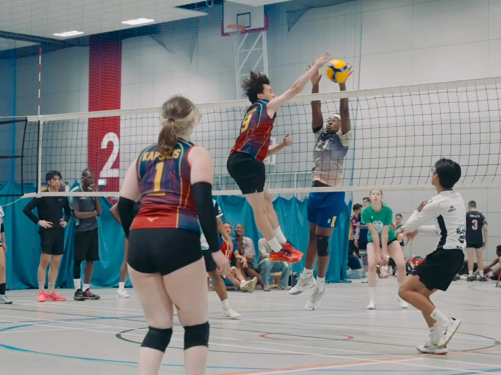

Featured project · Volleyball
K-Allstars Volleyball.
A volleyball tournament built so that every player feels seen, and the story of why it exists.
01 · Tournament film
K-Allstars 2026
The story of the tournament, told in the words of its founder and producer, Caye Genis.
The brief
K-Allstars started as a joke between friends. After too many tournaments that cost players time and money and gave little back, Caye decided to run a different one: competitive but enjoyable, and recognising everyone who takes part, not just the top players. The film needed to capture that feeling as well as the volleyball.
What we made
We filmed the 2026 tournament and cut a story-led film, carried by Caye's voiceover about why the event exists. Alongside the rallies and celebrations, it takes in what makes the day different: the people behind the scoreboard, the merchandise and artists' stalls, and the teams hugging it out at the end.
The result
A film that shows what the event is for, not just who won. It also marks what the tournament gave back: sales of the K26 Constellation Collection raised £431 for the Lavinia Norfolk Centre, which supports students with physical, visual and sensory impairments.